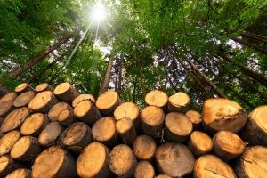

GEKE

Definicion de Recursos renovables:
El recurso renovable es un tipo de recurso natural que puede renovarse a partir de procesos
naturales y con una rapidez mucho m? elevada a la medida que el ser humano los consume, es decir,
se renuevan tan velozmente que no se agotan y entonces, los hombres pueden hacer uso de ellos siempre.
Ejemplos de recursos renovables
- El agua
Otro recurso natural que resulta indispensable para la vida de todos los seres vivos que habitan el planeta Tierra es el
agua.
- El viento
Otro recurso natural que es inagotable e indispensable como fuente de energ?, que se capta a trav? de molinos, es el
viento.